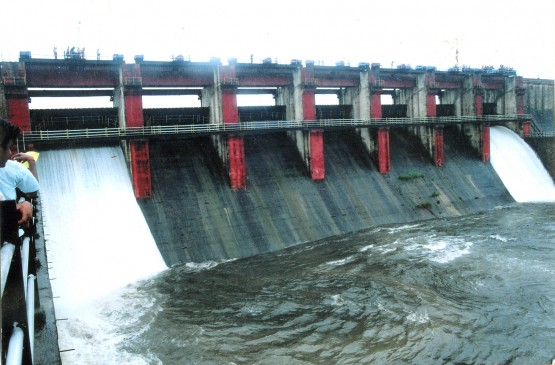
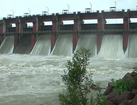

Irai Dam
Irai Dam
Irai Dam is an earthfill and gravity dam on Irai river near Chandrapur and Tadoba Andhari Tiger Project in state of Maharashtra in India. A borderline flood situation was seen in the catchment and the low-lying areas of this dam and the nearby Chargaon dam in September 2012. The situation came under control after the rainfall stopped.
About

Known as an earthfill and gravity dam on Irai River, Erai Dam is located next to Chandrapur and Tadoba Andhari Tiger Reserve in the state of Maharashtra. The height of the dam is 30 m (98 ft) and the length is 1620 m (5,310 ft).